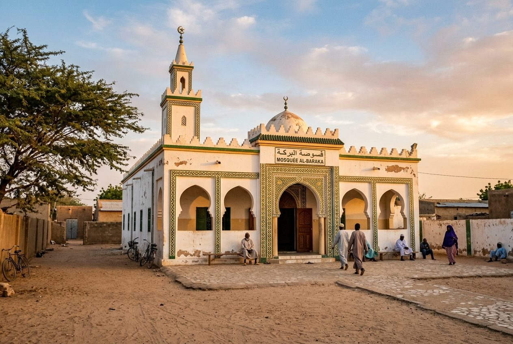

Recent Completion
Direct proof of impact from our recently completed mosque projects.

BEFORE AFTER
AFTER
Sound System Upgrade • Masjid Baitul Hikmah
Complete overhaul of audio amplification with 6 ceiling column speakers, dual wireless UHF microphones, and acoustic balancing. Over 800 worshippers benefit during Friday Khutbah and daily prayers.
Amount Raised & Spent: ₦435,000
Beneficiaries: Approx. 800 Worshippers